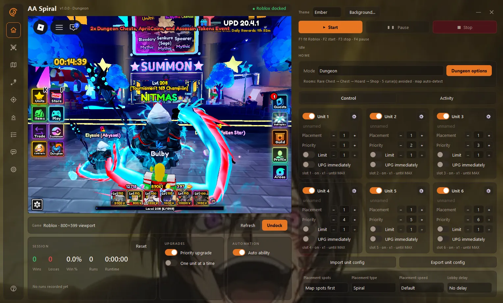

↻
Find your flow
A macro project centered on the repetitive side of your Anime Adventures sessions.
Let Spiral macros handle the grind. Make more time for family, fresh air, and adventures beyond the screen.

Spiral is a macro for Anime Adventures. Explore the project here, then create a ticket in our Discord to discuss your purchase and setup.
A macro project centered on the repetitive side of your Anime Adventures sessions.
Create a purchase ticket in Discord and discuss payment, access, and setup with the team.
Connect with the Spiral community for project news, discussions, and updates.
All purchases are discussed in Discord. Join the server and create a ticket to arrange your payment and access.
Pay with PayPal or cryptocurrency. Discuss payment details in your Discord ticket.
Purchase in Discord ↗Prefer Robux? Create a ticket to discuss your purchase with the team.
Purchase in Discord ↗Anime Adventures units are also accepted. Open a ticket to discuss your offer and agree on the details.
Discuss your offer ↗↳ Join the Discord server → Create a ticket → Discuss your purchase.
A fresh start in three simple steps.
Follow the invite and create a ticket to discuss purchasing Spiral.
Pay $10 via PayPal or crypto, use 1,000 Robux, or discuss an Anime Adventures unit offer in your ticket.
Arrange access with the team, then follow the supplied setup instructions for your first session.
Spiral Development is the project behind Spiral, a macro for Anime Adventures.
Join our Discord and create a ticket to discuss your purchase. Pricing is $10 via PayPal or cryptocurrency, or 1,000 Robux. We also accept Anime Adventures units; discuss your offer in the ticket.
Ask the team in Discord about supported systems and required software before purchasing. Follow the setup documentation provided with the macro.
Join our Discord server for help. For purchases, create a ticket to discuss payment and access with the team. Check the supplied documentation for setup instructions.
No. Spiral Development is an independent project and is not affiliated with Anime Adventures or Roblox. Review the game’s current rules before using automation.